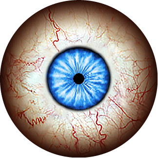

Your first autonomous routine
Choose Subtle for a spooky head turn every 1–2 minutes. No wiring to the prop is needed.
- Use a 6.5-foot Ultra Skelly v2 and an original ESP32-WROOM. Other models are unverified.
- Open Send to your ESP32, install universal firmware once, then save your routine over USB.
- Power Skelly in Bluetooth mode and disconnect other controllers. Watch a complete head animation.
- Add arm, torso, eyes or lighting to make the routine your own.
Choose a personality
Body movement
Move selected motors together with one command. Waits for the current movement's full cooldown before starting.
Combination choices and timing
Randomly choose from these allowed combinations (all selected motors must be enabled above):
If mouth is enabled, keep body protection ON and jaw-first reactions OFF.
Eye expressionsOff · preview your chosen expression
Keep one expression, or switch randomly between selected designs. When off, Skelly keeps its stored eyes.

Open the options below to choose an expression or build a random rotation. Preview buttons enlarge designs without changing your selection.
Selected: eye #1 · fixedChoose expressions & switching
Choose at least one design. In fixed mode, selecting another replaces the current choice.
Eye previews are included for offline use. Source attribution is included with the project.
LightingOff · body and head colors
Choose a palette or your own colors. When off, Skelly keeps its stored lighting. Palette rotation and lighting effects have been confirmed working by the owner.
Colors, effects & palette switching
Create your own palettes
Edit any of these four slots. Names and both colors are saved in your profile and used for rotation.
Effects for all palettes in this scene
Effects, speed and brightness apply to every palette in this scene, separately for torso and head. Palettes store colors only. Speed: 0 slow → 254 fast. Static ignores speed. Strobe flashes; avoid it where flashing lights are unsuitable.
Lighting is off.
Palette buttons apply one look and turn rotation off. Brightness, effects and playback behavior stay as you set them.
For palette rotation, link each palette in Create your own palettes above.
Idle breaksOff · pauses between routines
Idle breaks
Occasional quiet stretches after animations finish. Hardware integration is still untested.
Scene builderSave a complete look, or rotate a few throughout the evening
Each scene keeps its movements, eyes, lighting and other settings. Save up to four in this browser; export a copy to keep or share.
Start with the first scene. After its set minutes, finish active actions and full cooldowns, then reconnect with the next scene. In order loops through your list; Random chooses a different scene each time. Time starts when Skelly connects; scenes do not advance while disconnected. With switching off, only the first scene runs.
No custom scenes saved.
Send to your ESP32
Install universal firmware once, then read and save settings here. Your routine runs on its own after USB disconnects.
Connect USB to check Skelly.
No controller status received yet.
Connect your ESP32 to read or save settings.
First-time setup · install universal firmware
- Use an original ESP32-WROOM. Download universal firmware below and open the .ino in Arduino IDE.
- Choose ESP32 Dev Module with Arduino-ESP32 3.3.12, then compile and upload once.
- Close Arduino Serial Monitor and other USB tools. Use desktop Chrome or Edge, choose Connect ESP32, then your board’s port (often CP2102 USB to UART Bridge or CH340, with a COM number).
- Wait for Ready. Read an existing controller’s settings, or confirm replacement and save your routine or scenes. Later edits use these save buttons.
Prefer a reviewed prebuilt package? The browser installer accepts its local package files. Studio does not compile source in the browser. Keep a copy of your working firmware and settings before reinstalling.
Advanced & testingClock window, Bluetooth and logs
USB diagnostics & recovery
These are the last reported controller values. They do not confirm physical movement. Clock time is only needed when a scheduled window is enabled.
Restoring defaults uses the replacement confirmation in Send to your ESP32.
If identification stalls, close other serial apps/tabs and use Retry identification above. If needed, press EN/Reset once and retry. To diagnose separately, disconnect Studio, open Arduino Serial Monitor at 115200 / Newline, then send SKELLY HELLO and SKELLY STATUS. Close Serial Monitor before reconnecting Studio.
Connection & diagnostics
No Bluetooth MAC address to enter! The ESP32 automatically discovers the address by scanning for this name. Only change it if you renamed your Skelly.
At 115200 baud, records BLE write results, heap, connection attempts and lighting progress. Boot/reset information and event timestamps are always logged. Lighting test and log instructions ↗
Optional mouth routines · limitedOff · optional
Mouth movement plays stored MP3s: playback can interrupt motors and replace your eyes and colors. Protection and estimated clip timing can delay other routines; exact synchronization is unavailable.